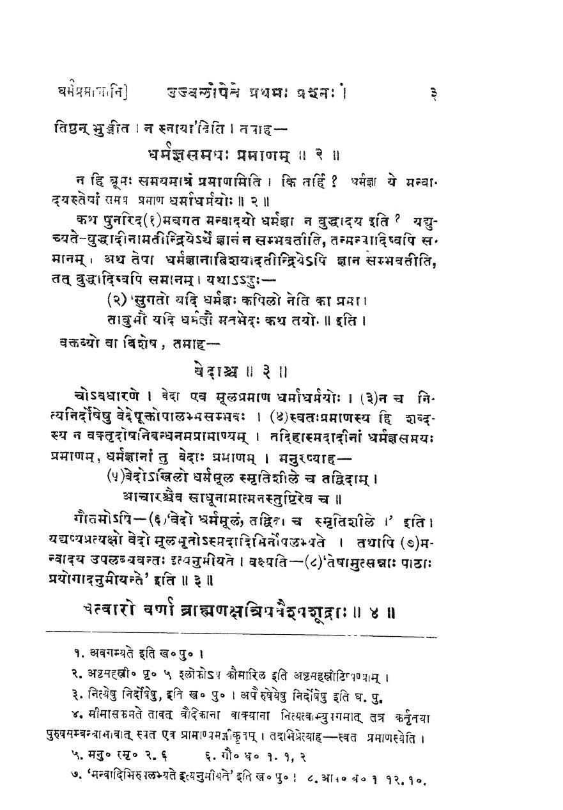

General
- Longing video intro (markdown format check, quotes, headers, footnotes, new lines within paragraph,): R202212
- Testing formatting: Use http://dillinger.io
- General reference: MD Guide.
- italics -
_italics_. Bold -**Bold**.
Headings and sections
## Top heading
### Subheading
#### Subsubheading
content
Don’t do the below (शीर्षिकाः स्वभावतः स्थूलाक्षरैः प्रदर्श्यन्ते, तत्र विशिष्टाङ्कनस्यापेक्षा नास्ति। पङ्क्ति-मध्य-वर्तित्वम् उपेक्षणीयम्।):
### **The proper age for Upanayana**
Lists
- item 1
- item 1.1
- item 2
- item 2.1
- item 2.2
- item 2.2.1
Spacing, paragraph-विवेकः
- Paragraphs are separated by empty lines. Please remove empty spaces at the beginning of lines. पाठखण्डानां (paragraph इत्येषां) विवेकः सम्यक् स्यात् - रिक्तपङ्क्ति-रिक्तस्थानादियोजनैः।
- Of course, some paragraphs have multiple lines (example - halves of a shloka). In such cases, there should be TWO SPACES at the end of each line.
line 1 ending with 2 spaces
line 2 in same paragraph.
Different paragraph.
Another paragraph.
Quotes
- यद्य् उद्धृतः पाठो ह्रस्वः, यथामूलम् एव रक्षितुम् उचितम्। यद्य् उद्धृतः पाठो दीर्घः, तर्हि >-चिह्नेन सह विन्यास इष्यते।
Long quotes
Example:
… यथाऽऽहुः —
> (२) सुगतो यदि धर्मज्ञः कपिलो नेति का प्रमा।
> तावुभौ यदि धर्मज्ञौ मतभेदः कथं तयोः ॥
इति ।
Quotations within quotations:
Rastelli:
> “The Lakṣmītantra, which differentiates four categories of bhogas, defines sāmsparśika as follows:
>
>> ‘Objects of enjoyment, which are gentle, pleasing, and soft to the touch, such as water used for washing the feet, arghya, and the throne, (all these) that satisfy the Unborn with touch are sāṃsparśikas’.”
Short quotes
- Please don’t use backticks (`). Use only
‘or“. - Ensure that quotes match (for example:
'the wife of the king, the man of _Devadatta_'. Or”the wife of the king, the man of _Devadatta_”.). - Please make sure that the quotes are appropriately positioned - for example,
- this is bad:
'similar, '_ûnartha_, 'words, '_kalaha_ 'quarrel,' - this is better:
'similar,' _ûnartha_, 'words,' _kalaha_ 'quarrel,' - and this is best:
'similar', _ûnartha_, 'words', _kalaha_ 'quarrel',. - We’re NOT OK with the “bad” punctuation, but ok with “better” and prefer “best” above.
- this is bad:
Footnotes
Often, footnotes which appear in the bottom of the page in a physical book, appear without separation in raw OCR text on screen. This confuses the reader. Hence, it should be properly formatted.
Consider the footnote in the image below (right click and open it in a new window for clearer view):

Here is how it should be presented in the markdown file:
|
|
Observe:
- Footnote numbers have been formatted specially -
[^1698]etc. - Footnote definitions can be of two styles. Indenting is important in the second style, which can accommodate multiple paragraphs. (MD Guide.)
- We may choose to break paragraphs, but not sentences, so as to define footnotes near their place of use. It is ok to place footnotes at the nearest logical place - example at the end of the paragraph or list.
Tables and charts
- Please generate tables using online tools such as 0, 1. तत्र फलकं रचयतु। ततः “Generate” इति नुदतु। ततः “Copy to clipboard” इति कृत्वा सम्पाद्यमानसञ्चिकायां लिम्पतु (paste करोतु)।
- Consider ditto marks or identical text associated with other text in a list (example here): Just repeat the text.
- In case of other cases/ confusion, please contact us with a link to the page with the table/ chart/ figure. Don’t hesitate to ask.
Interleaving commentary
असकृत् समूलटिप्पनीः प्रस्तोतव्याः स्युः। तदैवं तेषाम् प्रदर्शनम्। Commentary may be interleaved as follows:
{kind=link}

## सूत्रम्
वेदाश्च ॥ ३॥
### प्रस्तावः
वक्तव्यो वा विशेष , तमाह---
### टिप्पनी
चोऽवधारणे । वेदा एव मूलप्रमाणं धर्माधर्मयोः ।…
At times, it may be desirable to encapsulate the core/ मूल text as well, as below.
<details><summary>प्रस्तावः</summary>
वक्तव्यो वा विशेष , तमाह---
</details>
<details open><summary>मूलम्</summary>
वेदाश्च ॥ ३॥
</details>
<details><summary>टीका</summary>
चोऽवधारणे । वेदा एव मूलप्रमाणं धर्माधर्मयोः ।…
</details>
Preserving page numbers
कदाचित् पृष्ठसङ्ख्यारक्षणम् इष्यते। एवं रक्ष्येरन् - [[123]]।
मूले paragraph-मध्ये श्लोकमध्ये वा नूतनपृष्ठारम्भस् स्यात्। तर्हि मध्ये पृष्ठसङ्ख्या निपतेत्। अस्मत्संस्करणे तद् वारणीयम्। pargraph-आदि-विच्छेदो यथा न स्यात् तथा पृष्ठसङ्ख्याम् इषच् चालयित्वा स्थापणीयम्। ताः सङ्ख्याः pagagraph मध्ये न स्युः, वाक्यमध्ये नैव, पदमध्ये नैव। यथा अत्र (←उद्घाट्य पश्यतु) -
श्री-सर्वार्थ-सिद्धि--रघुवीर-गद्य--वासव-दत्ता-मङ्गल-श्लोकवत् वस्तु-निर्देश-रूपं च मङ्गलं सूचितम् । “पाराशर्यवचस्सुधे"त्यत्र
> "स्तुत्य्-आत्मक-गुरूपासन-रूप-मङ्गलाचारश् चार्थतः क्रियत”
इति श्रुत-प्रकाशिकायाम् उक्तम् ।
[[32]]
भजनौपयिक-गुण-विशेषान् आह - **अखिले**त्यादिना ।
**भुवन**-शब्दः क्षेत्रज्ञ-परः - 'त्रिभुवनं सम्प्रत्य् अनन्तोदयं' इति चतुश्-श्लोकी-स्थ-त्रिभुवन-शब्दवत्,
अनपेक्षित-पाठ-निष्कासनम्
यान्त्रिकाक्षराभिज्ञानेन (OCR करणेन) जनिते पाठे कदाचिद् एवम् अनपेक्षित पाठास् स्युर्, ये निष्कासनीयाः -
A
HODAI
.
.